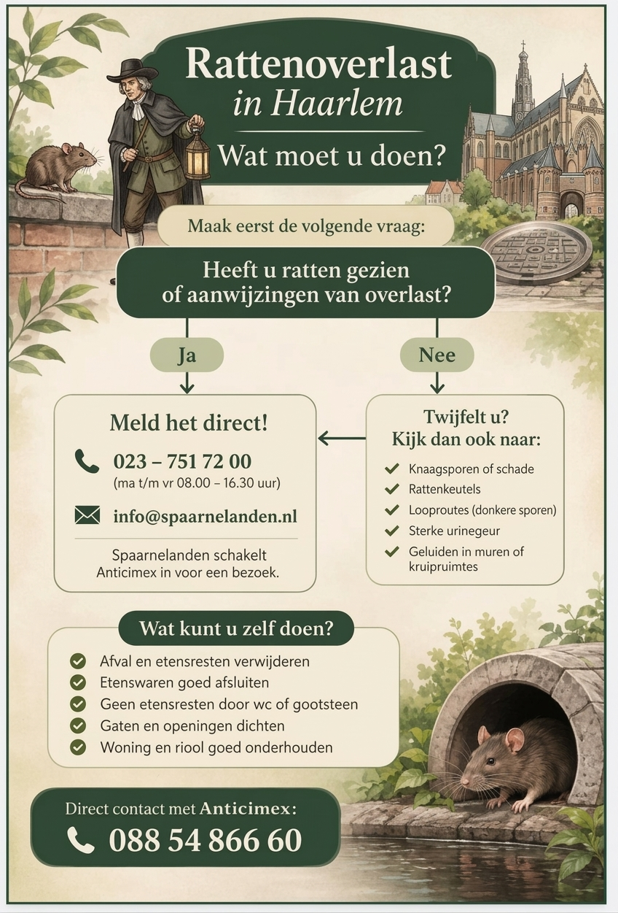

Rattenoverlast melden in Haarlem
Kies wat je wilt doen. Je mag beide knoppen gebruiken.
Knop: Mail Spaarnelanden
Voor een officiële melding en gratis hulp aan huis.Sinds november 2026 onbeperkt gratis hulp.
E-mail voorbereiden naar Spaarnelanden
Vul je gegevens in en klik op Open e-mail naar Spaarnelanden. Je e-mailprogramma opent met alle gegevens al ingevuld zodat je de mail zelf kunt versturen.
Knop: Meld op de rattenkaart
Laat de buurt zien waar ratten, keutels of holen zijn.Let op: dit is géén melding bij Spaarnelanden. Mail Spaarnelanden óók voor hulp.
Waarom twee knoppen?
Spaarnelanden is voor hulp. De kaart maakt de overlast zichtbaar voor de buurt.
Samen maken we zichtbaar wat anders onzichtbaar blijft.
Nadat je de e-mail hebt geopend, keer je terug naar deze website. We kunnen niet controleren of je de e-mail daadwerkelijk hebt verzonden of dat Spaarnelanden deze heeft ontvangen.
Rattenkaart: waar zijn de hotspots?
Vul een straat in Haarlem in om je waarneming te plaatsen.
Per straat krijg je maximaal drie bolletjes: 1 bolletje voor alle opgetelde ratten (dat van kleur verandert als het er meer worden), 1 bolletje voor keutels en 1 bolletje voor gangen en holen. Voor jouw privacy staan de bolletjes willekeurig ergens in die straat en niet bij een huisnummer. Alleen een exact gespelde straatnaam in Haarlem wordt op de kaart geplaatst, en je kunt maximaal 1 melding per uur doen.
Vul het aantal ratten in. Je kunt per melding maximaal 20 ratten doorgeven.
Meldingen worden opgeslagen en op straatniveau weergegeven op de kaart. Maximaal 1 melding per uur tegen sabotage.
Leefregels tegen ratten
Ratten hebben voedsel, water en schuilplekken nodig. Met een paar eenvoudige gewoontes verklein je de kans op ratten.

Zet geen vuilniszakken los op straat: ratten knagen door plastic zakken heen zodra er etensresten in zitten.
- Geen etensresten of vogelvoer los: gooi geen eten op straat of in de tuin en voorkom gemorst vogelvoer.

- Afval netjes opbergen: zet afvalzakken niet los op straat en sluit kliko's en containers goed.
- Weinig schuilplekken: ruim rommel, houtstapels en dichte begroeiing langs muren en schuttingen op.
- Openingen dichten: let op gaten bij leidingen, gevels en riolering en meld gebreken.
Over dit initiatief
Rattenvanger van Haarlem is een onafhankelijk bewonersinitiatief. Wij maken zichtbaar wat onzichtbaar wordt gehouden over rattenoverlast in Haarlem.
- Geen ongediertebestrijders: wij vangen of bestrijden zelf geen ratten.
- Officiële melding blijft nodig: mail altijd Spaarnelanden voor hulp aan huis en vraag bij Anticimex om een gratis rooktest.
- Vrij toegankelijk: je kunt de kaart ook zonder melding bekijken via het menu.
PRIVACY
Geen persoonsgegevens of huisnummers op de kaart
De rattenkaart toont meldingen alleen op straatniveau.
- Geen naam, adres met huisnummer, telefoonnummer of e-mailadres voor de kaart.
- De stip komt op een willekeurige plek in de straat te staan, nooit bij een huisnummer.
Alleen als je de e-mail aan Spaarnelanden invult, vul je daar zelf je gegevens in om je melding te versturen.
Posters om te printen
Print een poster op A4-formaat en hang deze in de straat of portiek om buurtbewoners te informeren.
Poster 1 — Samen tegen ratten

Poster 2 — Haarlem (6 talen)

Poster 3 — Samen tegen rattenoverlast
.png)
Poster 4 — Wat moet u doen? (Haarlem)
